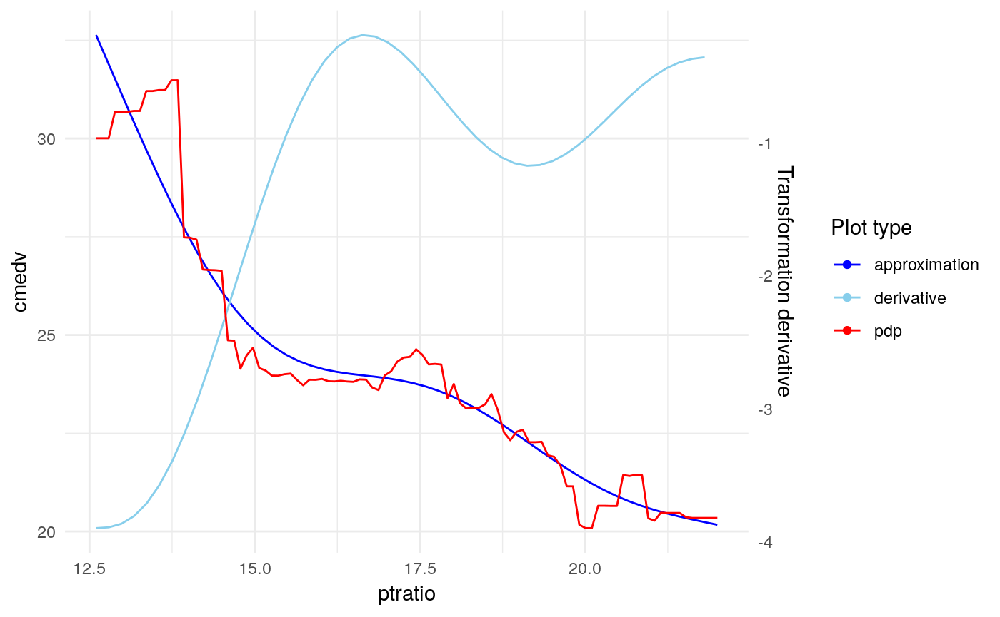

Extra information about the package
Krystian Igras
2018-12-07
6_extras.RmdThis sections provides some additional information and features that xspliner provides.
Monotonic splines approximation
For qualitative variables only
In some cases you may want to transform variables with monotonic function. xspliner provides option for monotonic spline approximation. You just need to specify monotonic parameter for local, or global xs transition. It actually can have 4 values:
- “not” the default one. Monotonicity is not required
- “up” approximation is increasing function
- “down” approximation is decreasing function
- “auto” compare increasing and decreasing approximation and chooses better one (basing on \(R^2\) statistic)
Let’s see below example:
library(randomForest)
library(pdp)
library(xspliner)
data(boston)
set.seed(123)
boston_rf <- randomForest(cmedv ~ lstat + ptratio + age, data = boston)
model_xs <- xspline(
cmedv ~
xs(lstat, transition = list(k = 6), effect = list(type = "pdp", grid.resolution = 100)) +
xs(ptratio, transition = list(k = 5), effect = list(type = "pdp", grid.resolution = 100)) +
age,
model = boston_rf,
xs_opts = list(transition = list(monotonic = "auto"))
)
plot(model_xs, "ptratio", plot_deriv = TRUE)

Choose if approximation is better
For qualitative variables only
When the response function has linear form, approximating it with splines may make the result worse. xspline function offers automatical check if spline approximation is better than linear one, and use it in final model.
You may find two parameters responsible for that:
-
alter- The subparameter oftransition. We already know how this parameter works for “always” and “never” values. There is also the third option, “auto”. In this case xspline automatically choose whther variable should be transformed with splines -
compare_stat- function oflmclass object. Defines statistic that should be used in decision between spline model and linear one. The function should have attributehigher. When the attribute has"better"value then the model with higher statistic value is chosen.
You can see the feature in above example:
set.seed(123)
boston_rf <- randomForest(cmedv ~ lstat + ptratio + age, data = boston)
model_pdp_auto <- xspline(
cmedv ~
xs(lstat, transition = list(k = 6), effect = list(type = "pdp", grid.resolution = 60)) +
xs(ptratio, transition = list(k = 4), effect = list(type = "pdp", grid.resolution = 40)) +
age,
model = boston_rf,
xs_opts = list(transition = list(alter = "auto"))
)
# aic statistic is used by default
summary(model_pdp_auto)##
## Call:
## glm(formula = cmedv ~ xs(lstat) + ptratio + age, family = family,
## data = data)
##
## Deviance Residuals:
## Min 1Q Median 3Q Max
## -12.7619 -3.2031 -0.6366 2.8787 26.9953
##
## Coefficients:
## Estimate Std. Error t value Pr(>|t|)
## (Intercept) 4.638819 2.952287 1.571 0.117
## xs(lstat) 1.248040 0.048545 25.709 < 2e-16 ***
## ptratio -0.858557 0.113027 -7.596 1.51e-13 ***
## age 0.054359 0.009827 5.532 5.11e-08 ***
## ---
## Signif. codes: 0 '***' 0.001 '**' 0.01 '*' 0.05 '.' 0.1 ' ' 1
##
## (Dispersion parameter for gaussian family taken to be 24.87722)
##
## Null deviance: 42578 on 505 degrees of freedom
## Residual deviance: 12488 on 502 degrees of freedom
## AIC: 3068.2
##
## Number of Fisher Scoring iterations: 2Linear approximation was better for ptratio response function.
(todo below sections)